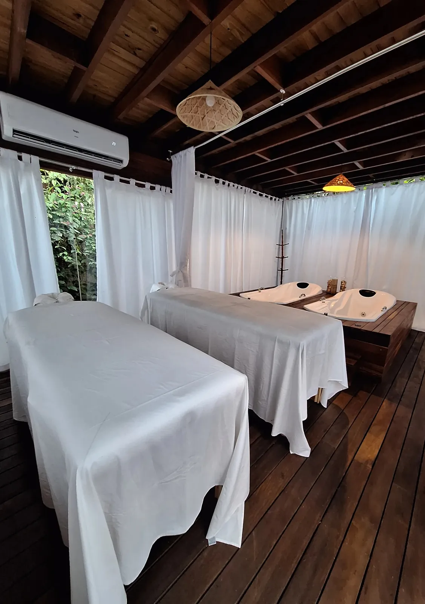

Quarto Double
Flat aconchegante com cama de casal, ar-condicionado, banheiro privativo e mini cozinha. Algumas unidades têm varanda com rede.
A consultar

Praia da Concha · Itacaré · Bahia
Flats aconchegantes, piscina, spa, café da manhã incluso e um jardim tropical a poucos minutos da areia da Praia da Concha.
01 · Sobre a pousada
A Blue Ocean Flats é uma pousada de charme em Itacaré, com excelente localização na Praia da Concha. Os flats são climatizados e equipados com mini cozinha, dando liberdade para você preparar o que quiser no seu ritmo.
Entre madeira, palha e um jardim tropical, a casa tem piscina ao ar livre, spa com massagens e hidromassagem, e o café da manhã incluso na diária. E sim: seu pet também é bem-vindo.


02 · Acomodações
Todos os flats têm banheiro privativo, ar-condicionado e mini cozinha. Escolha o seu.
Flat aconchegante com cama de casal, ar-condicionado, banheiro privativo e mini cozinha. Algumas unidades têm varanda com rede.
A consultar
Suíte espaçosa com mini cozinha completa e mais conforto para casais.
A consultar

Quartos amplos para a família, com mini cozinha e ar-condicionado. Uma unidade tem mezanino.
A consultar

Suíte família luxo com uma cama de casal, duas camas de solteiro no mezanino, mini cozinha e ar-condicionado.
A consultar
Duas camas de solteiro, mini cozinha e ar-condicionado, ideal para amigos.
A consultar
Suíte para casal com cama de casal, banheira, varanda, mini cozinha e ar-condicionado.
A consultar
Diárias a consultar, conforme a data e a disponibilidade. Confirme pelo WhatsApp.
03 · Café da manhã
Servido todos os dias na pousada.
04 · Spa
Massagens e hidromassagem aqui na pousada, com Rita e Leonor. O spa funciona por agendamento.
Chamar no WhatsApp
05 · Estrutura e comodidades
Check-in 14h
Check-out 12h
Café 7h30 às 10h
06 · Cantinho instagramável
Arraste ou use as setas para girar o carrossel.


Marque @pousadablueoceann nas suas fotos
07 · Galeria
08 · Avaliações
09 · Localização
Reservas
Fale direto com a pousada e garanta as melhores condições.
Chamar no WhatsApp · (73) 99907-4679